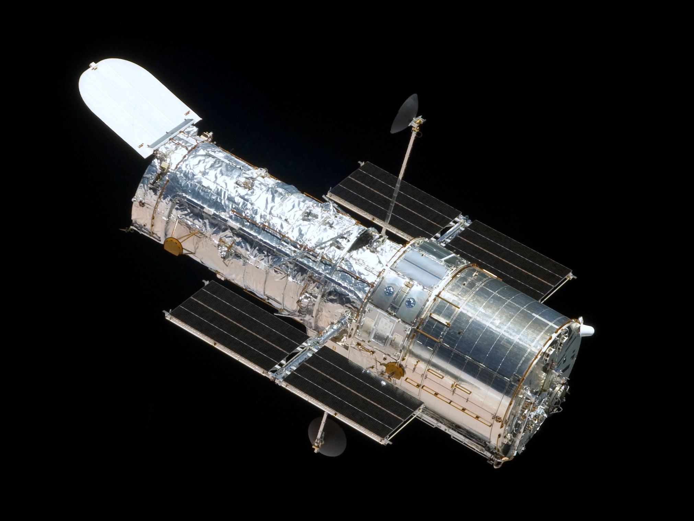

Space Missions — Every Major Mission from Sputnik to the 2040s
UPDATED Apr 12 2026 08:30A comprehensive guide to humanity's exploration of space — from the first satellite to robotic rovers on Mars, gravitational wave detectors, and the missions currently en route to the outer solar system. Covers NASA, ESA, Roscosmos, ISRO, CNSA, JAXA, SpaceX, and commercial operators.
1. Overview
As of 2026, humanity has launched over 10,000 objects to orbit and beyond. Roughly 60 nations and dozens of private companies operate or have operated spacecraft. The pace of launches has accelerated dramatically since 2015 — SpaceX alone conducts more launches per year than all nations combined did in the 1960s. The missions below represent milestones, scientific achievements, and the most consequential commercial and governmental space programmes.
2. Early Space Age (1957–1972)
| Year | Mission | Agency | Achievement |
|---|---|---|---|
| 1957 | Sputnik 1 | Roscosmos | First artificial satellite. 184-day orbit. Radio beacon heard worldwide. Triggered the Space Race. |
| 1957 | Sputnik 2 | Roscosmos | First living creature in orbit — dog Laika. Proved biological survival in space (briefly). |
| 1958 | Explorer 1 | NASA | First US satellite. Discovered the Van Allen radiation belts. |
| 1959 | Luna 2 | Roscosmos | First spacecraft to reach another world — impacted the Moon. |
| 1959 | Luna 3 | Roscosmos | First photographs of the Moon's far side. |
| 1961 | Vostok 1 | Roscosmos | Yuri Gagarin: first human in space, first orbit. 108 minutes. April 12, 1961. |
| 1962 | Friendship 7 (MA-6) | NASA | John Glenn: first American to orbit Earth. 3 orbits. |
| 1962 | Mariner 2 | NASA | First successful flyby of another planet — Venus. Confirmed hot dense atmosphere. |
| 1963 | Vostok 6 | Roscosmos | Valentina Tereshkova: first woman in space. |
| 1965 | Voskhod 2 | Roscosmos | Alexei Leonov: first spacewalk (EVA), 12 minutes outside. |
| 1965 | Mariner 4 | NASA | First flyby of Mars. 21 photographs revealed craters; dashed hopes of a habitable surface. |
| 1966 | Luna 9 | Roscosmos | First soft landing on the Moon. Proved surface was solid (not deep dust). |
| 1967 | Apollo 1 (fire) | NASA | Cabin fire during ground test killed Grissom, White, Chaffee. Led to major redesign. |
| 1968 | Apollo 8 | NASA | First crewed flight to the Moon. "Earthrise" photograph. Christmas Eve broadcast. |
| 1969 | Apollo 11 | NASA | Neil Armstrong and Buzz Aldrin land on the Moon (Sea of Tranquility). July 20, 1969. First humans on another world. |
| 1970 | Apollo 13 | NASA | Oxygen tank explosion. Crew survived using LM as lifeboat. "Successful failure." |
| 1970 | Venera 7 | Roscosmos | First soft landing on another planet (Venus). Survived 23 minutes of 465°C surface. |
| 1971 | Mariner 9 | NASA | First spacecraft to orbit Mars. Mapped 85% of surface. Revealed Valles Marineris and Olympus Mons. |
| 1972 | Apollo 17 | NASA | Last human Moon landing. Cernan, Evans, Schmitt. "Blue Marble" photograph of Earth. |

Buzz Aldrin on the lunar surface during Apollo 11, July 20, 1969. Neil Armstrong and the Eagle lander are reflected in Aldrin's visor. Photo: NASA / Neil Armstrong.
Apollo Crewed Missions — Crew, Duration & Notes
| Mission | Commander · CM Pilot · LM Pilot | Launch | Duration | Outcome |
|---|---|---|---|---|
| Apollo 1 | Gus Grissom · Ed White · Roger Chaffee | Planned Feb 21, 1967 | — | Cabin fire on launch pad Jan 27, 1967. All 3 killed. |
| Apollo 7 | Wally Schirra · Donn Eisele · Walter Cunningham | Oct 11, 1968 | 10 d 20 h | First crewed Apollo; Earth orbit shakedown. TV broadcast to public. |
| Apollo 8 | Frank Borman · Jim Lovell · Bill Anders | Dec 21, 1968 | 6 d 3 h | First humans to the Moon. Lunar orbit. "Earthrise" photo on Christmas Eve. |
| Apollo 9 | Jim McDivitt · Dave Scott · Rusty Schweickart | Mar 3, 1969 | 10 d 1 h | Earth orbit LM test. First crewed LM flight. EVA spacesuit testing. |
| Apollo 10 | Tom Stafford · John Young · Gene Cernan | May 18, 1969 | 8 d 0 h | Lunar orbit dress rehearsal. LM descended to 15.2 km from surface. |
| Apollo 11 | Neil Armstrong · Michael Collins · Buzz Aldrin | Jul 16, 1969 | 8 d 3 h 18 m | First Moon landing. Sea of Tranquility. 21 h 36 m on surface. 21.55 kg samples. |
| Apollo 12 | Pete Conrad · Dick Gordon · Alan Bean | Nov 14, 1969 | 10 d 4 h | Precise landing 183m from Surveyor 3. 7.75 h EVA. 34.4 kg samples. |
| Apollo 13 | Jim Lovell · Jack Swigert · Fred Haise | Apr 11, 1970 | 5 d 22 h | O₂ tank explosion Apr 13. Moon landing aborted. LM used as lifeboat. All crew survived. |
| Apollo 14 | Alan Shepard · Stu Roosa · Ed Mitchell | Jan 31, 1971 | 9 d 0 h | Fra Mauro (Apollo 13 target). 9.38 h EVA. Shepard hit two golf balls on the Moon. |
| Apollo 15 | Dave Scott · Al Worden · Jim Irwin | Jul 26, 1971 | 12 d 7 h | First lunar rover (LRV). Hadley Rille. 18.55 h EVA. 77 kg samples. |
| Apollo 16 | John Young · Ken Mattingly · Charlie Duke | Apr 16, 1972 | 11 d 2 h | Descartes Highlands. 20.23 h EVA. 95.7 kg samples. |
| Apollo 17 | Gene Cernan · Ron Evans · Harrison Schmitt | Dec 7, 1972 | 12 d 14 h | Taurus-Littrow. Schmitt: only geologist on Moon. 22.05 h EVA. 110.5 kg samples. Last humans on Moon. |
Total Apollo programme cost: ~$28B in 1960s dollars ≈ $280B in 2024 dollars. 6 successful landings · 12 humans walked on the Moon · 382 kg of lunar samples returned · programme ran 1961–1972.
3. Moon Missions
| Year | Mission | Agency | Achievement / Notes | Status |
|---|---|---|---|---|
| 1969–72 | Apollo 11–17 | NASA | 6 successful landings, 12 humans walked on the Moon, 382 kg of samples returned. | Complete |
| 1990 | Hiten | JAXA | Japan's first lunar mission. Demonstrated aerobraking. Impacted Moon 1993. | Complete |
| 1994 | Clementine | NASA | Mapped the Moon globally. First evidence of water ice at lunar south pole. | Complete |
| 2008 | Chandrayaan-1 | ISRO | India's first lunar mission. MIP probe confirmed water molecules in lunar soil. | Complete |
| 2009 | LRO / LCROSS | NASA | LRO: detailed lunar mapping, still active. LCROSS: impactor confirmed water ice at Cabeus crater. | Complete |
| 2010 | Chang'e 2 | CNSA | Lunar orbiter; later flew to L2 and then asteroid Toutatis flyby. | Complete |
| 2013 | Chang'e 3 / Yutu | CNSA | First soft landing on Moon since 1976. Yutu rover operated 31 months. | Complete |
| 2019 | Chang'e 4 / Yutu-2 | CNSA | First-ever landing on Moon's far side (Von Kármán crater). Yutu-2 still operating in 2026 — longest-lived lunar rover. | Active |
| 2019 | Chandrayaan-2 | ISRO | Orbiter healthy; Vikram lander crashed at ~500m altitude due to software fault. | Partial |
| 2020 | Chang'e 5 | CNSA | First lunar sample return since Luna 24 (1976). Returned 1.73 kg from Mons Rümker. | Complete |
| 2023 | Chandrayaan-3 / Pragyan | ISRO | First landing at lunar south pole. Vikram lander + Pragyan rover confirmed sulphur and water ice. India becomes 4th nation to soft-land on Moon. | Complete |
| 2024 | IM-1 (Odysseus) | Intuitive Machines | First commercial soft landing on Moon (tipped on side near Malapert A). Carried NASA instruments. | Complete |
| 2025 | Artemis II | NASA | First crewed lunar flyby since Apollo 17. 4 astronauts, 10-day mission around the Moon. SLS + Orion. | 2025 |
| 2026 | Chang'e 6 | CNSA | Sample return from lunar far side South Pole–Aitken Basin — most ancient crater on Moon. | 2026 |
| 2026+ | Artemis III | NASA | First crewed Moon landing since 1972. SpaceX Starship HLS lands at lunar south pole. Targets water ice region. | 2026+ |
| 2027 | Luna 27 (LUNA-RESURS) | Roscosmos | Planned polar lander; search for water ice and resources. Previously Luna-25 crashed 2023. | 2027 |
4. Mars Missions
| Year | Mission | Agency | Achievement / Notes | Status |
|---|---|---|---|---|
| 1976 | Viking 1 & 2 | NASA | First successful Mars landers. Biology experiments inconclusive. Operated 6+ years. High-res surface images. | Complete |
| 1997 | Mars Pathfinder / Sojourner | NASA | First Mars rover. Sojourner operated 83 days. Demonstrated airbag landing. | Complete |
| 2001 | Mars Odyssey | NASA | Longest-operating Mars spacecraft. Mapped hydrogen (water ice) deposits. Still active 2026. | Active |
| 2003 | Mars Express | ESA | ESA's first Mars mission. MARSIS radar found subsurface liquid water lake under south polar ice. Active 2026. | Active |
| 2004 | Spirit & Opportunity (MER) | NASA | Spirit: 6 years. Opportunity: 15 years, 45 km. Confirmed liquid water once flowed on Mars. | Complete |
| 2006 | Mars Reconnaissance Orbiter | NASA | HiRISE camera at 25 cm/pixel resolution. Identified recurring slope lineae. Communications relay. Active 2026. | Active |
| 2012 | Curiosity (MSL) | NASA | Sky-crane landing. Confirmed Gale Crater was habitable lake. Still driving in 2026 — 14+ years. | Active |
| 2014 | MOM (Mangalyaan) | ISRO | India's first interplanetary mission. Reached Mars orbit on first attempt — only nation to do so. $74M total cost. | Complete |
| 2016 | ExoMars TGO / Schiaparelli | ESA Roscosmos | TGO mapped methane and other trace gases. Schiaparelli lander crashed (thruster anomaly). | TGO Active |
| 2021 | Perseverance + Ingenuity | NASA | Caching samples for future return. Ingenuity helicopter: 72 flights — first powered flight on another planet. Active 2026. | Active |
| 2021 | Tianwen-1 / Zhurong | CNSA | China's first Mars orbiter+lander+rover. Zhurong rover operated 358 days. Confirmed subsurface water ice. | Complete |
| 2021 | Hope Probe (EMM) | UAE | UAE's first space mission. Mars climate orbiter studying atmosphere. First Arab interplanetary mission. | Active |
| 2026 | Mars Sample Return (phase) | NASA ESA | Earth Return Orbiter + Sample Fetch Rover planned to retrieve Perseverance's cached tubes. Budget and timeline under review. | 2027+ |
| 2030s | Starship Mars Mission | SpaceX | Elon Musk's stated goal: uncrewed Starship to Mars ~2026, crewed mission 2028–2030. No confirmed manifest yet. | TBD |

NASA's Curiosity rover self-portrait at the "Namib Dune" in the Murray Formation of Gale Crater, January 2016. Curiosity has driven over 30 km on Mars since landing in August 2012. Photo: NASA/JPL-Caltech/MSSS.
5. Outer Planets & Deep Space
| Year | Mission | Agency | Achievement | Status |
|---|---|---|---|---|
| 1972–73 | Pioneer 10 & 11 | NASA | First spacecraft through asteroid belt. Pioneer 10: first Jupiter flyby (1973). Pioneer 11: first Saturn flyby (1979). Pioneer anomaly sparked dark matter debate. | Lost contact |
| 1977 | Voyager 1 & 2 | NASA | Flyby of all four giant planets. Voyager 1 is humanity's most distant object (~24 billion km, 2026). Voyager 2 is the only spacecraft to visit Uranus and Neptune. Both in interstellar space. | Active |
| 1989 | Galileo | NASA | Jupiter orbiter + atmospheric probe. Discovered Europa's subsurface ocean. Operated 1995–2003. | Complete |
| 1990 | Ulysses | NASA ESA | First spacecraft over solar poles. Studied solar wind in 3D. Operated 19 years. | Complete |
| 1997 | Cassini-Huygens | NASA ESA | Saturn orbiter (13 years). Huygens probe landed on Titan — furthest landing from Earth ever. Discovered Enceladus geysers and subsurface ocean. | Complete 2017 |
| 2006 | New Horizons | NASA | Pluto flyby 2015 — first close images. Heart-shaped Tombaugh Regio. Then Arrokoth flyby 2019 (furthest object ever visited). Entering Kuiper Belt. | Active |
| 2011 | Juno | NASA | Jupiter polar orbiter. Mapped magnetic field, confirmed deep atmospheric bands. Now extended to Ganymede, Europa, Io flybys. | Active |
| 2016 | OSIRIS-REx | NASA | Sampled asteroid Bennu (2020). Returned 121g of material to Earth (2023) — largest asteroid sample ever. Now en route to asteroid Apophis. | Active (→Apophis) |
| 2019 | Hayabusa2 | JAXA | Sampled asteroid Ryugu, including subsurface material. Returned 5.4g to Earth 2020. Confirmed organic molecules including amino acid building blocks. | Extended (→1998 KY26) |
| 2023 | JUICE (JUpiter ICy moons Explorer) | ESA | En route to Jupiter. Will orbit Ganymede — first orbit of a moon other than our own. Arrives 2031. Study of Ganymede, Europa, Callisto. | En route |
| 2024 | Europa Clipper | NASA | Largest NASA planetary science spacecraft. 49 flybys of Europa. Will assess habitability of its subsurface ocean. Arrives Jupiter 2030. | En route |
| 2027 | Dragonfly | NASA | Nuclear-powered rotorcraft to Titan. Will fly to dozens of sites on Titan's surface — largest moon of Saturn, only body with lakes of liquid hydrocarbons. Launch 2028, arrives 2034. | Approved |

Pluto photographed by New Horizons at closest approach, July 14, 2015 — the first close images ever taken of the dwarf planet. The heart-shaped Tombaugh Regio is clearly visible. Photo: NASA/Johns Hopkins University APL/Southwest Research Institute.
6. Space Telescopes & Observatories
| Year | Mission | Agency | Achievement / Notes | Status |
|---|---|---|---|---|
| 1990 | Hubble Space Telescope | NASA ESA | Most productive science instrument ever. 1.5 million+ observations. Serviced 5 times by shuttle. Deep field images showed early universe. Active 2026 (1 gyro mode). | Active |
| 1999 | Chandra X-ray Observatory | NASA | Sharpest X-ray images. Studied black holes, supernovae, galaxy clusters. Active 2026. | Active |
| 2003 | Spitzer Space Telescope | NASA | Infrared telescope. Studied exoplanet atmospheres, cool brown dwarfs, distant galaxies. Retired 2020. | Retired 2020 |
| 2009 | Kepler / K2 | NASA | Discovered 2,662 confirmed exoplanets. Showed planets are common around stars. Retired 2018. | Retired 2018 |
| 2009 | Planck | ESA | Mapped CMB with highest precision. Confirmed ΛCDM model. Age of universe: 13.8 billion years. Retired 2013. | Complete |
| 2015 | LISA Pathfinder | ESA | Technology demonstrator for gravitational-wave detection in space. Exceeded all requirements. Retired 2017. | Complete |
| 2018 | TESS | NASA | All-sky exoplanet transit survey. Found 7,000+ candidates, 400+ confirmed planets. Active 2026. | Active |
| 2021 | JWST | NASA ESA CSA | Most powerful space telescope. Infrared. 6.5m mirror. Images galaxies forming 400 million years after Big Bang. Studying exoplanet atmospheres for biosignatures. At L2. Active 2026. | Active |
| 2023 | Euclid | ESA | Dark energy and dark matter survey. Will map 1/3 of sky in visible + near-IR. Active 2026, returning data. | Active |
| 2027 | Roman Space Telescope (Nancy Grace) | NASA | 100× Hubble field of view in near-infrared. Dark energy surveys, microlensing exoplanet census, coronagraph test for direct exoplanet imaging. | 2027 |
| 2034 | LISA | ESA | Space gravitational-wave detector. Three spacecraft, 2.5 million km triangle. Will detect supermassive black hole mergers across the observable universe. | 2034 |
| 2035 | Habitable Worlds Observatory (HWO) | NASA | Successor to Roman. ~6m UV/optical/IR telescope. Primary goal: direct imaging and spectroscopy of Earth-like exoplanets to search for biosignatures. | ~2035+ |

The Hubble Space Telescope photographed from Space Shuttle Atlantis during Servicing Mission 4 (STS-125) in May 2009. This was the final shuttle servicing mission. Photo: NASA.
7. Space Stations
| Years | Station | Agency | Notes | Status |
|---|---|---|---|---|
| 1971–82 | Salyut 1–7 | Roscosmos | First space stations. Salyut 1: first occupied station (1971). 7 stations total, military and scientific missions. | Deorbited |
| 1973–74 | Skylab | NASA | First US station. 3 crews. Solar telescope. Reentry 1979. | Deorbited |
| 1986–2001 | Mir | Roscosmos | First modular station. 15 years of continuous occupation. US-Russia cooperation in 1990s. Deorbited 2001. | Deorbited |
| 1998– | ISS | NASA Roscosmos ESA JAXA | Largest structure in space: 109m × 73m. 420km altitude. Continuously inhabited since Nov 2000. Over 270 individuals from 21 countries. Retirement planned ~2030 (deorbit 2030–2035). | Active |
| 2021– | Tiangong (CSS) | CNSA | Chinese Space Station. 3-module core. Crew of 3. Independently replacing ISS for China. Fully operational 2022. Planned 10+ year life. | Active |
| 2025+ | Axiom Station | Axiom Space | First commercial space station. Modules attaching to ISS from 2025 then separating after ISS retirement. Will serve as primary LEO lab post-ISS. | In development |
| 2025+ | Gateway (Lunar) | NASA ESA JAXA | Lunar orbital station. Staging point for Moon landings. First modules (PPE + HALO) launch ~2025. Will orbit near-rectilinear halo orbit around Moon. | In development |

The International Space Station photographed from Space Shuttle Discovery (STS-119), March 2009. At 109m × 73m and 420,000 kg, it is the largest structure ever assembled in space, housing research across biology, physics, astronomy, and meteorology. Photo: NASA.
8. Commercial & New Space
Since 2010, private launch companies have fundamentally changed the economics of space access. SpaceX reduced launch costs by ~10× through reusable rockets. A new wave of commercial stations, lunar landers, and interplanetary vehicles is now in development.
| Year | Mission / Vehicle | Operator | Achievement | Status |
|---|---|---|---|---|
| 2010 | Falcon 9 / Dragon | SpaceX | First commercial ISS resupply (2012). First propulsive booster landing (2015). Crew Dragon first commercial crewed ISS flight (2020). 200+ Falcon 9 launches by 2026. | Active |
| 2019 | Crew Dragon Demo-2 | SpaceX NASA | First crewed commercial spacecraft to reach ISS. Ended US dependence on Soyuz for crew transport. | Complete |
| 2021 | Inspiration4 | SpaceX | First all-civilian crew. Jared Isaacman funded. Highest orbit for Dragon (590 km). 3-day mission. | Complete |
| 2021 | Blue Origin New Shepard | Blue Origin | Jeff Bezos reached space. First paying passenger (90-year-old Wally Funk). 20 flights total before 2022 failure, resumed 2024. | Active |
| 2023 | Starship IFT-1 → IFT-6 | SpaceX | World's largest rocket (121m). Progressive test flights. IFT-5 (Oct 2024): booster caught by tower arms (mechazilla). IFT-6 (Jan 2025): ship splashed down successfully. | Testing |
| 2024 | Polaris Dawn | SpaceX | Highest Earth orbit since Apollo (1,408 km). First commercial spacewalk (Sarah Gillis, Anna Menon). Studied space radiation. | Complete |
| 2024 | New Glenn | Blue Origin | First orbital launch of New Glenn heavy-lift rocket. Successful orbit, booster ocean landing failed on first attempt. | Active |
| 2025+ | Starlink V2 / Gen3 | SpaceX | 4,000+ operational satellites (2026). Direct-to-cell service. ~$10B revenue/year. Largest satellite constellation ever by far. | Active |
| 2025+ | Rocket Lab Neutron | Rocket Lab | Medium-lift partially reusable rocket. 13-tonne LEO capacity. Targeting 2025–2026 debut to complement Electron. | Development |
| 2025+ | ULA Vulcan Centaur | ULA | Replaced Atlas V. First flight Jan 2024 (Peregrine lunar lander). Will launch Dream Chaser spaceplane. | Active |
9. Failures & Disasters
For every celebrated success, multiple missions have failed — sometimes with the loss of life, sometimes because of software bugs, engineering errors, or units mismatches. These failures shaped safety culture and engineering practice more profoundly than any successes.
Crewed Disasters
| Date | Mission | Crew Lost | Cause | Legacy |
|---|---|---|---|---|
| Jan 27, 1967 | Apollo 1 fire | Gus Grissom, Ed White, Roger Chaffee | Cabin fire during ground test in a pure-oxygen atmosphere. Faulty wiring under Grissom's seat ignited. The inward-opening hatch could not be opened under internal pressure. All three died within minutes. | Program halted 20 months. Complete Apollo capsule redesign: quick-opening hatch, fire-resistant materials, mixed O₂/N₂ atmosphere on the pad. The most impactful safety overhaul in US space history. |
| Jun 30, 1971 | Soyuz 11 | Georgy Dobrovolsky, Vladislav Volkov, Viktor Patsayev | A pressure-equalisation valve opened prematurely during module separation at 168 km altitude. The capsule depressurised in 112 seconds. The crew, not wearing pressure suits (no room in the capsule), were found dead on recovery. The first and only humans to die in space. | Soyuz redesigned to carry only 2 suited cosmonauts. Requirement for suits during ascent/reentry became permanent. Salyut programme redesigned. All subsequent crewed missions worldwide require pressure suits during critical phases. |
| Jan 28, 1986 | Challenger (STS-51-L) | Francis Scobee, Michael Smith, Ronald McNair, Ellison Onizuka, Judith Resnik, Gregory Jarvis, Christa McAuliffe | O-ring seal in the right solid rocket booster failed due to cold temperatures (−3°C at launch, O-rings brittle below 17°C). Hot gases breached the external tank. Orbiter broke apart 73 seconds after launch at 46,000 ft. Engineers had warned against launching in cold weather; management overruled them. | 32-month shuttle standdown. Rogers Commission. O-rings redesigned with heaters. Launch decision process overhauled — engineers now have formal authority to scrub. Christa McAuliffe (Teacher in Space) became a symbol. Normalisation-of-deviance concept enters engineering culture. |
| Feb 1, 2003 | Columbia (STS-107) | Rick Husband, William McCool, Michael Anderson, Kalpana Chawla, David Brown, Laurel Clark, Ilan Ramon | A 750g piece of foam insulation struck the leading edge of the left wing during launch, creating a 15–25 cm hole in the reinforced carbon-carbon panels. During reentry, superheated plasma (~1480°C) entered the wing structure. Vehicle broke apart over Texas and Louisiana at 63 km altitude, travelling at 18× the speed of sound. | 2.5-year standdown. Columbia Accident Investigation Board (CAIB). NASA's risk management culture overhauled. Foam strikes had occurred on previous missions but were not acted upon. Shuttle program retired 2011 partly as result. Kalpana Chawla: first Indian-American in space; memorialised worldwide. |
Robotic Mission Failures
| Year | Mission | Agency | Failure Mode & Cost |
|---|---|---|---|
| 1993 | Mars Observer | NASA | Lost 3 days before Mars orbit insertion. Probable cause: rupture in fuel pressurisation line caused spacecraft to spin uncontrollably. Cost $813M. Led to NASA's "faster, better, cheaper" policy — which then produced two more Mars failures in 1999. |
| 1999 | Mars Climate Orbiter | NASA | Lost at Mars orbit insertion. Root cause: Lockheed Martin's navigation software output thruster data in pound-force·seconds; NASA's trajectory team assumed newton-seconds. The unit mismatch pushed the spacecraft 170 km too low, causing it to burn up in the atmosphere. Cost $327.6M. Considered the most embarrassing units error in engineering history. |
| 1999 | Mars Polar Lander | NASA | Lost during powered descent. Most likely cause: spurious signal from landing leg sensors, generated when legs deployed during descent, falsely indicated touchdown and shut off the engines at ~40 m altitude. Spacecraft crashed at full descent speed. Cost $165M. Part of the "cheaper, faster" failure cluster alongside MCO. |
| 2003 | Beagle 2 | ESA | ESA's Mars lander went silent after separation from Mars Express on Christmas Day 2003. Found on the surface in 2015 by Mars Reconnaissance Orbiter — partially deployed with 2–3 of its 4 solar panel "petals" open, blocking the radio antenna. Probable cause: bounced and collided with a rock, or a petal was damaged during airbag landing. |
| 2016 | Schiaparelli EDM | ESA Roscosmos | ExoMars test lander crashed at ~300 km/h. IMU readings saturated for 1 second; onboard computer concluded it had already landed, jettisoned the parachute, and fired its retrorockets for only ~3 seconds instead of the required 30. The lander was still 3.7 km above the surface. Telemetry was received throughout — the failure was diagnosed precisely. |
| 2019 | Beresheet | SpaceIL (Israel) | First private Moon lander. An inertial measurement unit (IMU) was accidentally switched off during descent, triggering a chain of resets. Main engine could not restart in time. Crashed at ~500 km/h. Reportedly carried a payload of tardigrades and human DNA — location unknown on lunar surface. |
| 2019 | Chandrayaan-2 Vikram | ISRO | Lander entered an uncontrolled roll during powered descent. Software could not correct fast enough. Impacted ~500m from target at ~50 m/s rather than near-zero. Orbiter healthy and operating. ISRO did not release official failure analysis. Cost ~$140M total (lander + orbiter). Chandrayaan-3 successfully landed the same target site in 2023. |
| 2023 | Luna-25 | Roscosmos | Russia's first lunar mission since Luna-24 in 1976. An orbit-correction manoeuvre engine fired for 127 seconds instead of the planned 84 seconds due to a software error. Spacecraft entered an uncontrolled orbit and crashed on the Moon at ~2.5 km/s near the south pole — the very target it was racing to beat Chandrayaan-3 to. India landed 3 days later. |
| 2024 | Peregrine Mission 1 | Astrobotic / NASA CLPS | First commercial US lunar lander under NASA's CLPS programme. A propellant valve failed to close after launch, causing an oxidiser leak. The spacecraft lost ~40% of its propellant within hours and could not achieve a lunar trajectory. Redirected to burn up on Earth reentry 10 days later. Carried 5 NASA science instruments and commercial payloads including human remains. Cost ~$108M in NASA funding. |
10. Planned Missions 2025–2040s
| Target Date | Mission | Agency | Goal |
|---|---|---|---|
| 2025 | IMAP | NASA | Interstellar Mapping and Acceleration Probe — study heliopause and local interstellar medium. |
| 2025 | Artemis II | NASA | First crewed Orion flight, lunar flyby with 4 astronauts. |
| 2026 | Chang'e 7 | CNSA | South pole orbiter + lander + rover + mini-flying probe to search for water ice. |
| 2026 | Lunar Flashlight (follow-on) | NASA | Map water ice deposits at lunar south pole for future ISRU (in-situ resource utilisation). |
| 2026 | Mars Sample Return (ESO) | ESA | Earth Return Orbiter departs — first leg of returning Perseverance samples. |
| 2026+ | Artemis III | NASA | First crewed Moon landing since 1972. Starship HLS at south pole. |
| 2027 | Roman Space Telescope | NASA | Dark energy, microlensing, direct exoplanet imaging tech demo. |
| 2028 | Dragonfly | NASA | Rotorcraft lander to Titan. Chemistry of pre-life organics in hydrocarbon seas. |
| 2028 | LUPEX (Lunar Polar Exploration) | JAXA ISRO | Joint rover mission to lunar south pole. Drill to confirm water ice quantity and accessibility. |
| 2028 | Mars Ice Mapper | NASA ESA JAXA CNSA | Map shallow ground ice to select human landing sites. |
| 2030 | Europa Clipper (arrives) | NASA | 49 Europa flybys, full habitability assessment of subsurface ocean. |
| 2031 | JUICE (arrives) | ESA | Jupiter system tour, then Ganymede orbit — first moon orbiter other than our own. |
| 2032 | Uranus Orbiter & Probe | NASA | Highest priority Planetary Science Decadal Survey 2023–2032. First dedicated Uranus mission. Atmospheric probe + orbiter. |
| 2034 | LISA | ESA | Space gravitational wave observatory. Three spacecraft in solar orbit, 2.5 million km baseline. |
| 2035+ | Enceladus Orbilander | NASA | Proposed orbiter + lander for Saturn's moon Enceladus. Sample the plumes for biosignatures. |
| 2035+ | Habitable Worlds Observatory | NASA | ~6m UV/optical/IR; direct imaging of Earth twins around nearby stars. |
| 2040s | Human Mars Mission | NASA SpaceX | NASA's Moon-to-Mars roadmap targets humans at Mars by late 2030s. SpaceX Starship independent path targets earlier. |
11. Agency Profiles
Budget ~$25B/year (2026). Leads planetary science, human spaceflight (Artemis), and flagship telescopes. Partners extensively with ESA, JAXA, and commercial providers. Operates JPL (robotic missions), Johnson SC (human spaceflight), Goddard (satellites/telescopes).
Budget ~€7.8B/year. Ariane 6 launch vehicle after Ariane 5 retirement. Major missions: Rosetta (comet lander), Gaia (stellar mapping), Mars Express, JUICE, LISA. Strong science programme; partners with NASA on Hubble, JWST, Mars Sample Return.
Operated Soyuz crew vehicles to ISS until 2022 relations deteriorated. Launched Luna-25 (crashed 2023). Programme under strain due to sanctions and brain drain post-2022. Partnering with CNSA for joint lunar base programme (ILRS).
Most rapidly expanding programme. Chang'e lunar series, Tianwen Mars mission, Tiangong space station, Beidou navigation system (35 satellites). Targeting crewed Moon landing by 2030. Planning ILRS (International Lunar Research Station) with Russia. BeiDou: global navigation rival to GPS.
Budget ~$1.5B/year — extremely high value-per-dollar. Chandrayaan-3 landed at south pole 2023. Gaganyaan crewed mission planned 2025. Aditya-L1 solar observatory launched 2023. Commercial arm NewSpace India growing rapidly.
Known for precision engineering. Hayabusa series (asteroid sample return), H3 rocket, Kibo module on ISS, SLIM precision Moon lander (2024 — landed at 55m from target). Partnering with NASA on Artemis Gateway.
Transformed launch economics. Falcon 9: 250+ flights, ~60% reuse rate, $67M per launch vs $450M for Atlas V. Starship: world's largest rocket ever, fully reusable, targets Mars colonisation. Starlink: 4,000+ operational satellites. Crew Dragon sole US crew vehicle for ISS as of 2026.
New Shepard suborbital tourism. New Glenn heavy-lift rocket debuted 2024. Working on Blue Moon lunar lander for Artemis. Long-term goal: O'Neill-style space colonies and moving heavy industry off Earth.